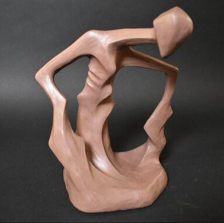
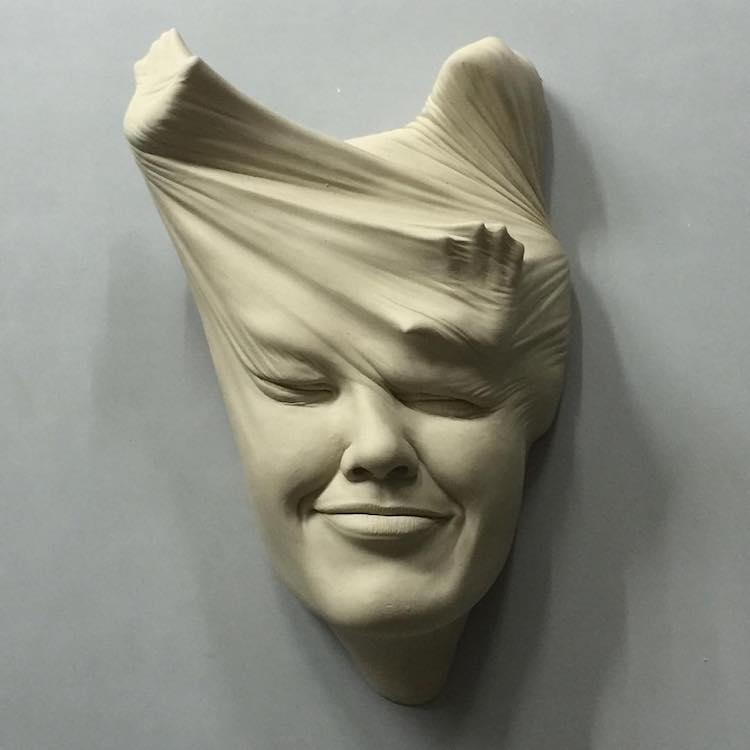
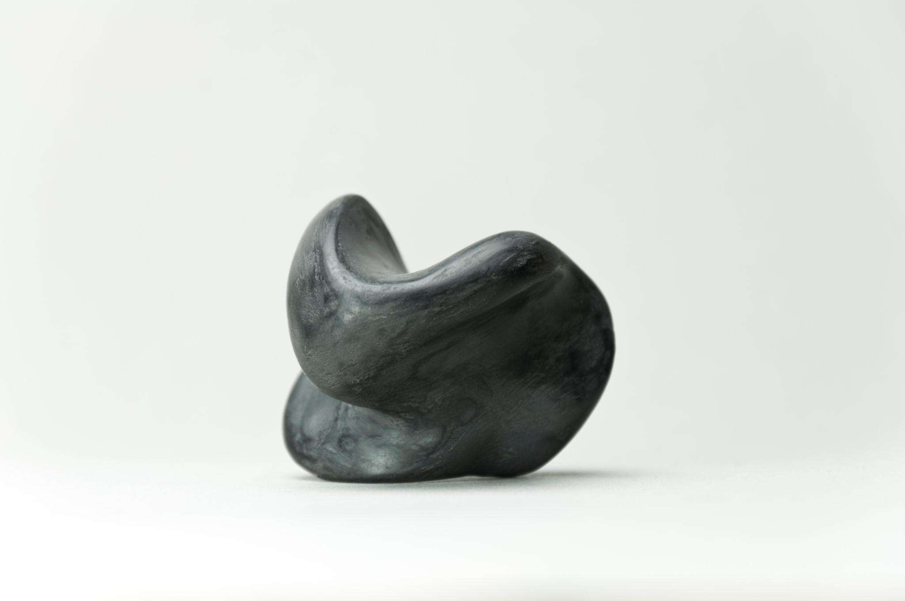
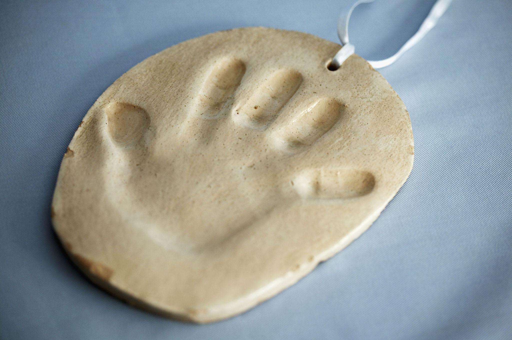

“형태는 완성된 결과가 아니라, 감정이 지나간 흔적이다.”
현대 사회에서 우리는 감정을 빠르게 소비하고 관리 대상으로 인식하지만,
실제 인간의 감정은 끊임없이 형태를 바꾸며 우리 내면에 머뭅니다.
“감정은 사라지는 것일까,
아니면 형태를 바꾸는 것일까?”
본 전시는 '찰흙'이라는 가변적인 매체를 통해 감정의 무게를 시각화합니다.
갈라지고 짓눌린 형태들은 결과물이 아닌, 우리가 통과해온 '과정' 그 자체입니다.
눌린 기억
늘어나는 시간
균열의 표면
남겨진 손

반복적으로 눌리고 뭉개지며 원래의 모습을 잃어버린 찰흙의 덩어리입니다. 억눌려온 기억이 어떻게 우리 내면의 형태를 변형시키는지 보여줍니다.

길게 늘어져 끊어지기 직전의 찰흙을 통해 기다림의 고통과 인내를 시각화했습니다. 시간의 흐름에 따라 희미해지는 감정의 궤적을 담았습니다.

건조하게 갈라진 겉면과 그 틈 사이로 보이는 아직 굳지 않은 내부를 대조시켰습니다. 단단한 척하지만 여전히 위태로운 우리의 마음을 닮았습니다.

누군가 머물다 간 자리에 깊게 패인 손자국들을 표현합니다. 관계가 끝난 뒤에도 우리 영혼에 선명하게 남아있는 타인의 흔적을 상징합니다.
각 전시실에는 작품의 감정선을 손동작으로 재현하는 로봇이 배치되어 있습니다.